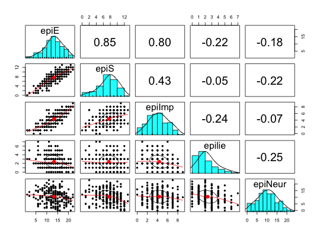

A small data set of 5 scales from the Eysenck Personality Inventory, 5 from a Big 5 inventory, a Beck Depression Inventory, and State and Trait Anxiety measures. Used for demonstrations of correlations, regressions, graphic displays.
data(epi.bfi)
A data frame with 231 observations on the following 13 variables.
epiEEPI Extraversion
epiSEPI Sociability (a subset of Extraversion items
epiImpEPI Impulsivity (a subset of Extraversion items
epilieEPI Lie scale
epiNeurEPI neuroticism
bfagreeBig 5 inventory (from the IPIP) measure of Agreeableness
bfconBig 5 Conscientiousness
bfextBig 5 Extraversion
bfneurBig 5 Neuroticism
bfopenBig 5 Openness
bdiBeck Depression scale
traitanxTrait Anxiety
stateanxState Anxiety
Self report personality scales tend to measure the ``Giant 2" of Extraversion and Neuroticism or the ``Big 5" of Extraversion, Neuroticism, Agreeableness, Conscientiousness, and Openness. Here is a small data set from Northwestern University undergraduates with scores on the Eysenck Personality Inventory (EPI) and a Big 5 inventory taken from the International Personality Item Pool.
Data were collected at the Personality, Motivation, and Cognition Lab (PMCLab) at Northwestern by William Revelle)
http://personality-project.org/pmc.html
describe(epi.bfi)#> vars n mean sd median trimmed mad min max range skew #> epiE 1 231 13.33 4.14 14 13.49 4.45 1 22 21 -0.33 #> epiS 2 231 7.58 2.69 8 7.77 2.97 0 13 13 -0.57 #> epiImp 3 231 4.37 1.88 4 4.36 1.48 0 9 9 0.06 #> epilie 4 231 2.38 1.50 2 2.27 1.48 0 7 7 0.66 #> epiNeur 5 231 10.41 4.90 10 10.39 4.45 0 23 23 0.06 #> bfagree 6 231 125.00 18.14 126 125.26 17.79 74 167 93 -0.21 #> bfcon 7 231 113.25 21.88 114 113.42 22.24 53 178 125 -0.02 #> bfext 8 231 102.18 26.45 104 102.99 22.24 8 168 160 -0.41 #> bfneur 9 231 87.97 23.34 90 87.70 23.72 34 152 118 0.07 #> bfopen 10 231 123.43 20.51 125 123.78 20.76 73 173 100 -0.16 #> bdi 11 231 6.78 5.78 6 5.97 4.45 0 27 27 1.29 #> traitanx 12 231 39.01 9.52 38 38.36 8.90 22 71 49 0.67 #> stateanx 13 231 39.85 11.48 38 38.92 10.38 21 79 58 0.72 #> kurtosis se #> epiE -0.06 0.27 #> epiS -0.02 0.18 #> epiImp -0.62 0.12 #> epilie 0.24 0.10 #> epiNeur -0.50 0.32 #> bfagree -0.27 1.19 #> bfcon 0.23 1.44 #> bfext 0.51 1.74 #> bfneur -0.55 1.54 #> bfopen -0.16 1.35 #> bdi 1.50 0.38 #> traitanx 0.47 0.63 #> stateanx -0.01 0.76